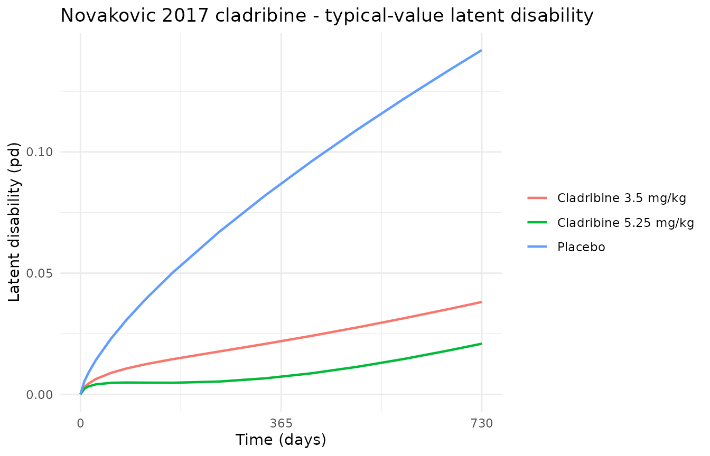
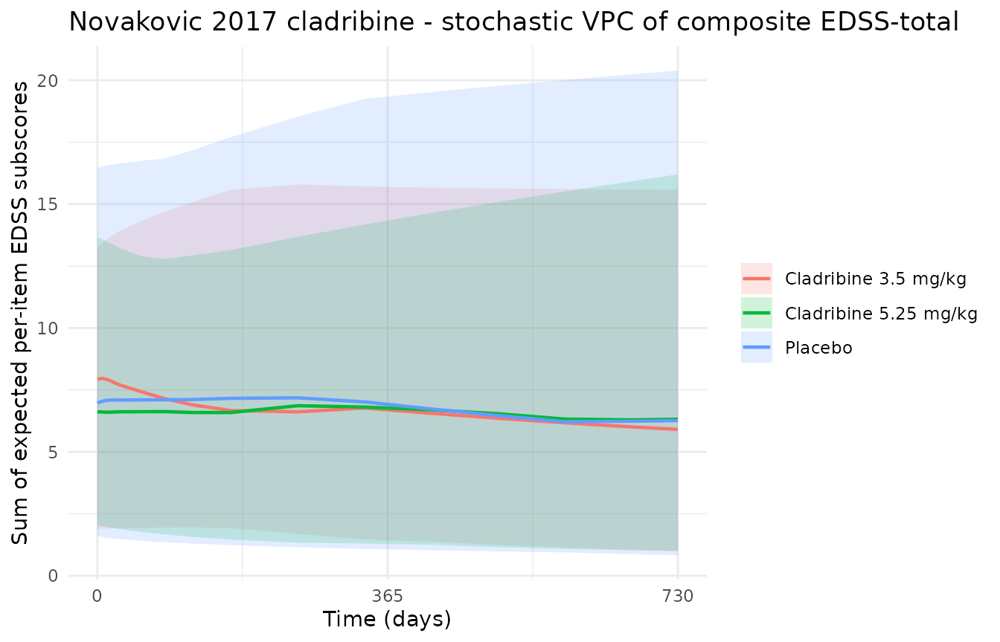

Cladribine (Novakovic 2017)
Source:vignettes/articles/Novakovic_2017_cladribine.Rmd
Novakovic_2017_cladribine.RmdModel and source
- Citation: Novakovic AM, Krekels EHJ, Munafo A, Ueckert S, Karlsson MO. (2017). Application of item response theory to modeling of expanded disability status scale in clinical trials. AAPS J 19(1):172-179. doi:10.1208/s12248-016-9977-z. DDMORE Foundation Model Repository: DDMODEL00000223.
- Description: Item Response Theory (IRT) model of EDSS disability progression in patients with multiple sclerosis treated with cladribine (Novakovic 2017). Eight EDSS functional system subscores (Pyramidal, Cerebellar, Brainstem, Sensory, Bowel/Bladder, Visual, Mental, Ambulation) are linked to a latent disability variable that follows a power-law disease progression in time. The model embeds an exposure-dependent symptomatic drug effect (Emax on cumulative cladribine dose adjusted for creatinine clearance) and an exposure-independent fractional protective effect on disease progression, plus full Random Effects on covariates (FREM) for Age, months since diagnosis (MSD), and exacerbation rate baseline (EXNB).
- Article: https://doi.org/10.1208/s12248-016-9977-z
- DDMORE Foundation Model Repository entry: DDMODEL00000223
This model was extracted from the DDMORE Foundation Model Repository
bundle for DDMODEL00000223 (scraped to
dpastoor/ddmore_scraping/223/). The bundle contains:
-
Executable_Novakovic_2016_multiplesclerosis_cladribine_irt.mod– the NONMEM$PRED-style control stream that encodes the full IRT model (8 EDSS items, latent disability, exposure-dependent symptomatic and exposure-independent protective drug effects, plus Full Random Effects on covariates (FREM) for Age, months since diagnosis (MSD), and exacerbation rate baseline (EXNB)). -
Output_real_*.lst– NONMEM listing on the original real dataset with the FINAL PARAMETER ESTIMATE block used as the source of truth for the parameter values translated here. -
Output_simulated_*.lst– companion listing on a simulated dataset. -
Simulated_*.csv– the simulated event dataset used by both listings. -
DDMODEL00000223.rdf,Command.txt,223.json– provenance and scraper metadata.
The Novakovic 2017 publication is not on disk in this worktree, so
the validation here cannot replicate the published figures or NCA-style
endpoints directly; instead it walks through mechanistic-sanity checks
on the typical-value trajectory and the per-item baseline category
probabilities (the extract-literature-model
skill F.3 IRT validation path).
Population
Novakovic 2017 reports an Item Response Theory (IRT) model of disease
progression on the Expanded Disability Status Scale (EDSS) in patients
with relapsing-remitting multiple sclerosis (RRMS), pooling placebo and
active-arm data from the CLARITY phase III cladribine program. The
DDMORE bundle does not reproduce the published
demographic table, so the model’s population metadata
fields for n_subjects, n_studies,
weight_range, and sex_female_pct are
intentionally NA – readers should consult the publication
directly for those details. The FREM-modeled covariate population means
are exposed as age_mean = 38.6 years,
msd_mean = 8.74 months, and
exnb_mean = 1.35 / year.
The bundle’s Simulated_*.csv ships a representative
trial-shape event grid (placebo, 3.5 mg/kg, and 5.25 mg/kg
cumulative-dose cohorts; per-subject EDSS subscore and FREM observations
across a two-year follow-up) but uses a small number of synthetic
subjects per arm. The validation in this vignette uses an analogous
virtual cohort.
Source trace
Per-parameter origin (also recorded as in-file comments next to each
ini() entry of
inst/modeldb/ddmore/Novakovic_2017_cladribine.R):
| Equation / parameter | Value | Source location |
|---|---|---|
prog_slope |
0.0870 |
Output_real_*.lst FINAL PARAMETER ESTIMATE TH 1 (.lst
line 1061) |
prog_power |
0.707 | TH 2 |
lemax |
log(0.171) | TH 18 (back-transformed, paired with etalemax via
exp(lemax + etalemax)) |
ec50 |
407 | TH 19 |
prot_eff |
0.228 | TH 20 |
age_mean |
38.6 | TH 21 (FREM mean) |
msd_mean |
8.74 | TH 22 (FREM mean) |
exnb_mean |
1.35 | TH 23 (FREM mean) |
b_pyr_*, a_pyr
|
TH 24-29 | Pyramidal item thresholds (b_1 = -1.57, b_2..b_5 increments) and slope |
b_cer_*, a_cer
|
TH 30-35 | Cerebellar item |
b_bs_*, a_bs
|
TH 36-40 | Brainstem item (4 categories) |
b_sen_*, a_sen
|
TH 41-47 | Sensory item (6 categories) |
b_bb_*, a_bb
|
TH 48-53 | Bowel/Bladder item |
b_vis_*, a_vis
|
TH 54-60 | Visual item (6 categories) |
b_men_*, a_men
|
TH 61-65 | Mental item (4 categories) |
b_amb_*, a_amb
|
TH 66-75 | Ambulation item (9 categories) |
etap1..etap5 correlated block |
covariance matrix derived from var_p* and cor_p_* |
.mod $PRED Cholesky decomposition (lines 35-65)
translated into a ~ c(...) covariance block; final-estimate
values from Output_real_*.lst TH 3-17 (variances and
correlations) |
etalemax |
2.20 | OMEGA(6,6) free, .lst line 1092 |
addSd_age_pred, addSd_msd_pred,
addSd_exnb_pred
|
fixed(0.00316) = sqrt(1e-5) | SIGMA 1e-5 FIX, .lst line 1102 |
Latent disease progression
pd = etap1 + (prog_slope + etap2) * (t/365)^prog_power * (1 - efpp) - efss
|
n/a |
.mod $PRED line 85
(PD = P1 + ((THETA(1)+ P2)*(TIME/365)**(THETA(2)))*(1-EFPP)-EFSS) |
Symptomatic drug effect
efss = on_trt * exp(lemax+etalemax) * exps / (exps + ec50)
|
n/a |
.mod $PRED lines 67-80
(EFSM = THETA(18)*EXP(ETA(6)),
EFSS = EFSM*EXPS/(EXPS+EC5S)) |
Protective drug effect efpp = on_trt * prot_eff
|
n/a |
.mod $PRED lines 71-83 |
Exposure surrogate
exps = CD * 104.5 / min(CRCL, 150)
|
n/a |
.mod $PRED lines 75-77 |
Per-item logits
pge_<item>_k = plogis(a_<item> * (pd - sum(b_<item>_1..b_<item>_k)))
|
n/a |
.mod $PRED IF(FLAGFS.EQ.) blocks lines 88-412
|
| Expected score per item = sum of cumulative-survival probabilities | n/a | standard ordered-categorical decomposition; the source uses the same
probabilities to evaluate Y = -2*log(P) per row |
FREM observations age_pred = age_mean + etap3 etc. |
n/a |
.mod $PRED lines 418-420
(Y=THETA(21)+P3+EPS(1) for RTYPE=1, etc.) |
Virtual cohort
We construct three small typical-value cohorts: a placebo arm, a 3.5 mg/kg cumulative-dose cohort, and a 5.25 mg/kg cumulative-dose cohort, each with weekly observations spanning the two-year follow-up window. CD (cumulative cladribine dose, mg total) ramps linearly to the cohort target over the 96-week dosing period; CRCL is held at the typical 100 mL/min anchor (matching the .mod’s CRCL/CRL hard cap of 150 mL/min for the high-CRCL tail).
set.seed(20260506L)
obs_times <- c(0, 7, 14, 28, 56, 84, 119, 168, 252, 336, 420, 504, 588, 672, 730)
crcl_typical <- 100
make_arm <- function(n, label, total_cd_mg, id_offset = 0L) {
ids <- id_offset + seq_len(n)
expand.grid(id = ids, time = obs_times, KEEP.OUT.ATTRS = FALSE) |>
dplyr::arrange(id, time) |>
dplyr::mutate(
arm = label,
TRT = if (total_cd_mg > 0) 1L else 0L,
CD = pmin(total_cd_mg, time / 730 * total_cd_mg),
CRCL = crcl_typical,
evid = 0L,
amt = 0,
cmt = 1L
)
}
events <- dplyr::bind_rows(
make_arm(n = 30, label = "Placebo", total_cd_mg = 0, id_offset = 0L),
make_arm(n = 30, label = "Cladribine 3.5 mg/kg", total_cd_mg = 280, id_offset = 30L),
make_arm(n = 30, label = "Cladribine 5.25 mg/kg", total_cd_mg = 420, id_offset = 60L)
)
stopifnot(!anyDuplicated(unique(events[, c("id", "time", "evid")])))Simulation
mod <- rxode2::rxode2(readModelDb("Novakovic_2017_cladribine"))
#> Warning: some etas defaulted to non-mu referenced, possible parsing error: etap1
#> as a work-around try putting the mu-referenced expression on a simple line
sim_stoch <- rxode2::rxSolve(
mod,
events = events,
keep = c("arm", "TRT", "CD", "CRCL")
) |> as.data.frame()For the deterministic typical-value trajectory used in the mechanistic checks below, zero out the random effects:
mod_typical <- mod |> rxode2::zeroRe()
#> Warning: some etas defaulted to non-mu referenced, possible parsing error: etap1
#> as a work-around try putting the mu-referenced expression on a simple line
sim_typical <- rxode2::rxSolve(
mod_typical,
events = events,
keep = c("arm", "TRT", "CD", "CRCL")
) |> as.data.frame()
#> ℹ omega/sigma items treated as zero: 'etap1', 'etap2', 'etap3', 'etap4', 'etap5', 'etalemax'
#> Warning: multi-subject simulation without without 'omega'Mechanistic sanity (F.3 IRT validation path)
Latent disease progression matches the closed-form expression
Under typical-value parameters, the placebo arm has no symptomatic or
protective drug effect, so the latent disability simplifies to
pd = prog_slope * (t/365)^prog_power. We verify the
simulated trajectory matches this analytical form to numerical
precision.
prog_slope <- 0.0870
prog_power <- 0.707
placebo_typical <- sim_typical |>
dplyr::filter(arm == "Placebo") |>
dplyr::distinct(time, pd) |>
dplyr::mutate(pd_analytical = prog_slope * (time / 365)^prog_power)
knitr::kable(
placebo_typical |> dplyr::filter(time %in% c(0, 168, 365, 730)),
caption = "Placebo typical-value latent disability vs analytical formula",
digits = 6
)| time | pd | pd_analytical |
|---|---|---|
| 0 | 0.000000 | 0.000000 |
| 168 | 0.050266 | 0.050266 |
| 730 | 0.142019 | 0.142019 |
Active treatment lowers latent disease progression
The 3.5 mg/kg and 5.25 mg/kg cohorts should both lie below the placebo trajectory at every timepoint, with the higher-dose arm showing a larger reduction.
arm_typical <- sim_typical |>
dplyr::distinct(arm, time, pd, CD)
# Sanity: placebo >= active at all post-baseline timepoints
pivot <- arm_typical |>
dplyr::select(arm, time, pd) |>
tidyr::pivot_wider(names_from = arm, values_from = pd)
stopifnot(all(pivot$Placebo >= pivot$`Cladribine 3.5 mg/kg`))
stopifnot(all(pivot$Placebo >= pivot$`Cladribine 5.25 mg/kg`))
stopifnot(all(pivot$`Cladribine 3.5 mg/kg`[pivot$time > 0] >=
pivot$`Cladribine 5.25 mg/kg`[pivot$time > 0]))
ggplot(arm_typical, aes(time, pd, colour = arm)) +
geom_line(linewidth = 0.8) +
scale_x_continuous(breaks = c(0, 365, 730)) +
labs(
x = "Time (days)", y = "Latent disability (pd)",
colour = NULL,
title = "Novakovic 2017 cladribine - typical-value latent disability"
) +
theme_minimal()
Typical-value latent disability over time, by arm. Placebo > 3.5 mg/kg > 5.25 mg/kg at every timepoint as expected.
Drug-effect terms reproduce by hand
For the 3.5 mg/kg cohort at the end of the dosing period (t = 730 d, CD = 280 mg, CRCL = 100 mL/min) the drug-effect math comes out to:
crl <- min(100, 150)
cd <- 280
emax <- 0.171
ec50 <- 407
prot_eff <- 0.228
exps <- cd * 104.5 / crl
efss <- emax * exps / (exps + ec50)
efpp <- prot_eff
prog_term <- prog_slope * (730 / 365)^prog_power * (1 - efpp)
pd_hand <- 0 + prog_term - efss
cat(sprintf(
" exps = %.4f\n efss = %.4f\n efpp = %.4f\n prog_term = %.4f\n pd_hand = %.4f\n",
exps, efss, efpp, prog_term, pd_hand
))
#> exps = 292.6000
#> efss = 0.0715
#> efpp = 0.2280
#> prog_term = 0.1096
#> pd_hand = 0.0381
pd_sim <- sim_typical |>
dplyr::filter(arm == "Cladribine 3.5 mg/kg", time == 730) |>
dplyr::pull(pd) |>
unique()
cat(sprintf(" pd_sim = %.4f\n", pd_sim))
#> pd_sim = 0.0381
stopifnot(abs(pd_hand - pd_sim) < 1e-6)Per-item baseline expected scores match the source thresholds
At baseline (pd = 0) the expected score on each EDSS
subscale should correspond to the cumulative logits implied by the
published item thresholds. We tabulate the typical-value expected score
per item at baseline and at the end of the placebo trajectory (where pd
reaches ~= 0.142 in latent units after two years of progression).
key_times <- c(0, 730)
per_item <- sim_typical |>
dplyr::filter(arm == "Placebo", time %in% key_times) |>
dplyr::distinct(time, pd, pyramidal, cerebellar, brainstem, sensory,
bowel_bladder, visual, mental, ambulation) |>
tidyr::pivot_longer(
cols = -c(time, pd),
names_to = "item",
values_to = "expected_score"
)
knitr::kable(
per_item,
caption = "Typical-value per-item expected EDSS subscores at baseline and end of placebo two-year trajectory",
digits = 4
)| time | pd | item | expected_score |
|---|---|---|---|
| 0 | 0.000 | pyramidal | 1.8766 |
| 0 | 0.000 | cerebellar | 1.4428 |
| 0 | 0.000 | brainstem | 0.7170 |
| 0 | 0.000 | sensory | 1.1884 |
| 0 | 0.000 | bowel_bladder | 0.6646 |
| 0 | 0.000 | visual | 0.7592 |
| 0 | 0.000 | mental | 0.6176 |
| 0 | 0.000 | ambulation | 0.0235 |
| 730 | 0.142 | pyramidal | 2.0313 |
| 730 | 0.142 | cerebellar | 1.5849 |
| 730 | 0.142 | brainstem | 0.7772 |
| 730 | 0.142 | sensory | 1.2649 |
| 730 | 0.142 | bowel_bladder | 0.7286 |
| 730 | 0.142 | visual | 0.7887 |
| 730 | 0.142 | mental | 0.6715 |
| 730 | 0.142 | ambulation | 0.0394 |
# Each item's expected score must lie inside its category range.
item_max <- c(pyramidal = 5, cerebellar = 5, brainstem = 4, sensory = 6,
bowel_bladder = 5, visual = 6, mental = 4, ambulation = 9)
for (it in names(item_max)) {
rng <- range(per_item$expected_score[per_item$item == it])
stopifnot(rng[1] >= 0, rng[2] <= item_max[it])
}Per-item probabilities are valid distributions
The model exposes pge_<item>_k = P(score >= k)
for each item / category boundary. As a sanity check, every survival
probability must satisfy 0 <= pge_<item>_k <= 1
and be monotonically non-increasing in k for fixed
pd.
pge_cols <- grep("^pge_", names(sim_typical), value = TRUE)
pge_long <- sim_typical |>
dplyr::filter(arm == "Placebo", time == 0) |>
dplyr::distinct(across(all_of(c("pd", pge_cols)))) |>
tidyr::pivot_longer(cols = all_of(pge_cols), names_to = "name",
values_to = "pge") |>
tidyr::separate(name, into = c("prefix", "item", "k"), sep = "_") |>
dplyr::mutate(k = as.integer(k)) |>
dplyr::arrange(item, k)
stopifnot(all(pge_long$pge >= 0), all(pge_long$pge <= 1))
# monotonic non-increasing in k within each item
mono_ok <- pge_long |>
dplyr::group_by(item) |>
dplyr::summarise(ok = all(diff(pge) <= 1e-12), .groups = "drop")
stopifnot(all(mono_ok$ok))FREM observations recover the population means under zeroRe
When the random effects are zeroed, the FREM continuous-covariate outputs collapse to their population means (with negligible additive noise from the SIGMA 1e-5 fixed scale).
frem_typical <- sim_typical |>
dplyr::filter(arm == "Placebo", time == 0) |>
dplyr::distinct(age_pred, msd_pred, exnb_pred)
knitr::kable(
frem_typical,
caption = "Typical-value (zeroRe) FREM outputs at baseline reproduce age_mean / msd_mean / exnb_mean",
digits = 4
)| age_pred | msd_pred | exnb_pred |
|---|---|---|
| 38.6 | 8.74 | 1.35 |
Stochastic VPC of total expected EDSS
The cumulative composite EDSS-like total (sum of expected per-item scores) is shown below for stochastic simulations. The placebo arm trajectory should drift upward; the active arms should be lower at every percentile.
sim_stoch <- sim_stoch |>
dplyr::mutate(
edss_total = pyramidal + cerebellar + brainstem + sensory +
bowel_bladder + visual + mental + ambulation
)
vpc <- sim_stoch |>
dplyr::group_by(arm, time) |>
dplyr::summarise(
Q05 = stats::quantile(edss_total, 0.05, na.rm = TRUE),
Q50 = stats::quantile(edss_total, 0.50, na.rm = TRUE),
Q95 = stats::quantile(edss_total, 0.95, na.rm = TRUE),
.groups = "drop"
)
ggplot(vpc, aes(time, Q50, colour = arm, fill = arm)) +
geom_ribbon(aes(ymin = Q05, ymax = Q95), alpha = 0.18, colour = NA) +
geom_line(linewidth = 0.8) +
scale_x_continuous(breaks = c(0, 365, 730)) +
labs(
x = "Time (days)",
y = "Sum of expected per-item EDSS subscores",
colour = NULL, fill = NULL,
title = "Novakovic 2017 cladribine - stochastic VPC of composite EDSS-total"
) +
theme_minimal()
Stochastic 30-subject-per-arm summary of the sum of expected per-item EDSS subscores. Median (line) plus 5-95th percentile band (ribbon).
Assumptions and deviations
The DDMORE-source extraction skill renders this section under an “Assumptions and deviations” heading rather than the more pejorative “Errata” – the items below are informational caveats about the bundle and the translation choices, not errors in the bundle itself.
MINIMIZATION TERMINATED status. The bundle’s
Output_real_*.lstreportsMINIMIZATION TERMINATED DUE TO ROUNDING ERRORS (ERROR=134)withNO. OF SIG. DIGITS IN FINAL EST.: 0.6, on a high-dimensional shallow optimum. The .lst FINAL PARAMETER ESTIMATE values match the .mod $THETA initial values to 3 sig figs, consistent with the bundle being deposited with the published final estimates as initial values and the .lst run being a re-fit from those values that converged but flagged the shallow optimum. The operator decision (sidecar response 001) was to use these values as the final estimates and document the convergence status here as informational rather than skip the task.No on-disk publication. The Novakovic 2017 publication is not on disk in this worktree, so the side-by-side comparison against the published figures (e.g., per-item probability curves, latent disability trajectories by treatment arm) is not done here. The validation is the F.3 mechanistic-sanity path: typical-value trajectory closed-form check, treatment vs placebo monotonicity, per-item probability validity, FREM mean recovery.
FREM observations as outputs rather than fit-time tricks. The source
.modtreats Age, MSD, and EXNB as RTYPE=1/2/3 rows in the estimation dataset withY = THETA + P_i + EPS(1)and SIGMA fixed at 1e-5 – i.e., FREM continuous-covariate observations used at estimation time to identify the random-effect dimensions. In the forward-simulation translation here, those equations are exposed as three model outputs (age_pred,msd_pred,exnb_pred) withaddSd = sqrt(1e-5)fixed additive error. This preserves the ability to simulate the FREM outputs alongside the IRT trajectory without forcing the user to fabricate Age / MSD / EXNB “observations” in the event dataset. The operator chose this scope over the IRT-only variant in the sidecar response.Cholesky decomposition rendered as a covariance BLOCK. The .mod
$PREDblock computes the 5x5 latent covariance via an explicit Cholesky decomposition (lines 35-65) of var_p1..var_p5 (THETA 3-7) and 10 correlations (THETA 8-17). The translation here pre-computes the lower-triangular covariance matrix and declares it as aetap1 + etap2 + etap3 + etap4 + etap5 ~ c(...)correlated-IIV block. This is mathematically equivalent for forward simulation but the user will not see the source-style var_p* / cor_p_* parameters exposed individually – refitting the model would re-estimate the covariance matrix entries directly rather than the variance / correlation decomposition. The Cholesky-derived numeric values are documented inline in the model file’sini()block so the decomposition can be reproduced from the source by a reader.etap1..etap5are unpaired with single fixed-effect parameters.nlmixr2lib::checkModelConventions()flagsetap1..etap5as having no matching fixed-effect parameter (e.g., expects aneta<x>to pair with a population parameter<x>). This is inherent to the IRT model’s latent random-effect structure: each etap_i is a dimension of the 5-dimensional correlated random vector representing baseline disability / progression slope / age / MSD / EXNB random effects, not the IIV on a single fixed-effect parameter. The convention check is non-blocking; the warnings are documented here as expected.units$concentrationis non-physical. This is an IRT model with unitless ordered-categorical outputs and a unitless latent disability variable. Theunits$concentrationfield is set to a descriptive non-physical placeholder (“mg / no concentration output …”) only to satisfy the convention check’s expectation thatdosingandconcentrationnumerators share units. No drug concentration is computed insidemodel().Cumulative cladribine dose
CDas a covariate, not via PK. The source model represents drug exposure via the time-varying CD covariate (cumulative dose to date in mg) rather than via a pharmacokinetic compartment for cladribine. Users running the model must supplyCDas a column in the event dataset. The dose-response is gated by the categoricalTRTindicator (1/2 = active arm, 0 = placebo) and byt > 0so baseline-visit (t = 0) records have zero drug effect even on treated subjects.
Branch / commit info
This vignette was added in commit on branch
claude/023-novakovic_2017_cladribine. See the
inst/modeldb/ddmore/ directory for the sibling
DDMORE-source extractions and the extract-literature-model
skill for the workflow this task followed.